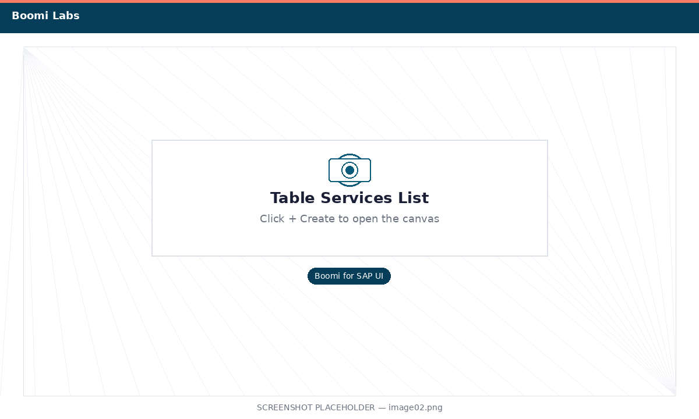
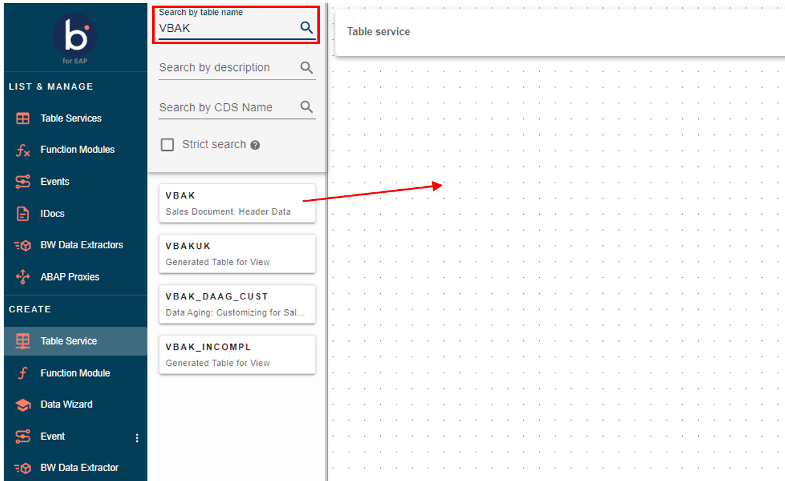
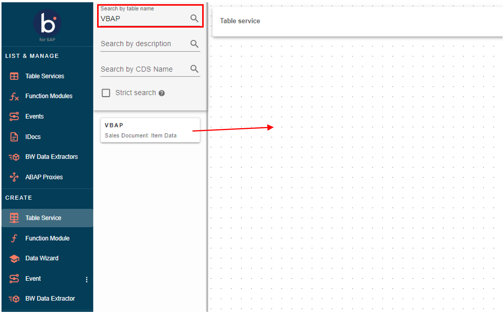
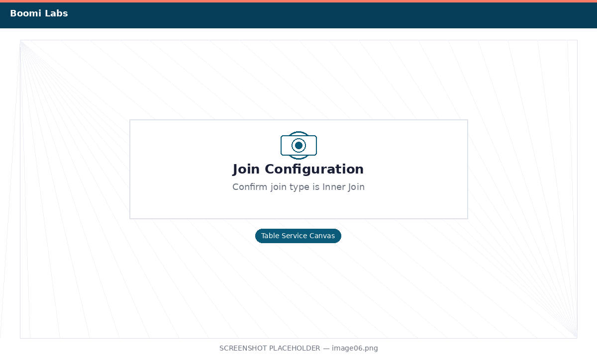
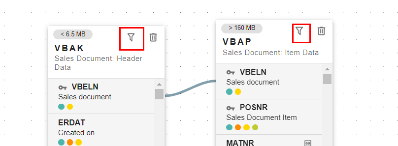
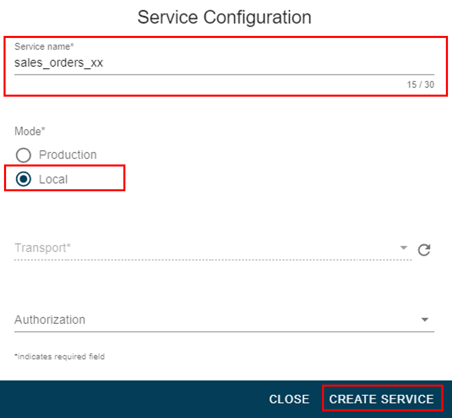
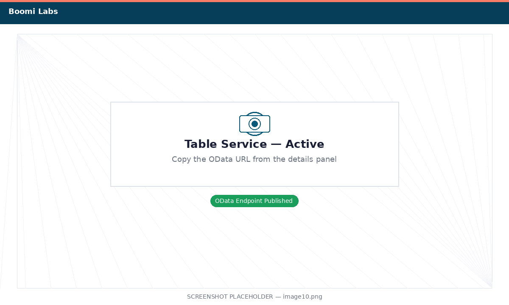

Connect to SAP and Create a Table Service
Use the Boomi for SAP UI to expose SAP sales order data as an OData-style Table Service.
What you'll do
SAP stores sales orders across two related tables: VBAK (Sales Document Header — one row per order) and VBAP (Sales Document Items — one row per line item). In this exercise you'll use the Boomi for SAP drag-and-drop UI to join those tables and publish a Table Service — a managed OData endpoint that Boomi Data Integration can query in Exercise 2.
- How to navigate the Boomi for SAP UI
- How to join SAP tables on the Table Service canvas
- How to select only the fields your data warehouse needs
- How to publish a Table Service so it's queryable from Boomi Data Integration
Log In to Boomi for SAP
Open the Boomi for SAP UI and navigate to Table Services.
-
1
Open a new browser tab and navigate to the Boomi for SAP UI. Log in with the credentials below.
-
2
After logging in you will land on the Boomi for SAP home screen. In the left navigation, click Table Services.

Navigate to Table Services in the left sidebar -
3
Click the + Create button in the top-right corner to open the Table Service canvas.

Click + Create to open a new Table Service canvas
Add VBAK and VBAP to the Canvas
Search for the two SAP sales order tables and drag them onto the canvas.
VBAK — Sales Document Header: one row per sales order (order number, customer, total value, currency, dates).
VBAP — Sales Document Items: one row per line item within an order (material number, quantity, description).
-
1
In the Table Search box on the left panel, type
VBAK. The search results will show Sales Document: Header Data.Click the table name or drag it onto the canvas area.

Search for VBAK and add it to the canvas -
2
Clear the search box and type
VBAP. Find Sales Document: Item Data and drag it onto the canvas to the right of VBAK.
Both tables are now on the canvas
Join VBAK and VBAP on VBELN
Connect the two tables using the shared Sales Document Number field.
-
1
On the VBAK table card, locate the field VBELN (Sales Document Number). Hover over it — a connector dot will appear on the right edge of the field row.
-
2
Click and drag from the VBAK VBELN connector dot across to the VBELN field on the VBAP table. Release to create the join line.

The join line represents an inner join on VBELN (Sales Document Number) -
3
Click the join line to confirm it is an Inner Join. This means only sales orders that have at least one line item will be returned — which is the correct behavior for our data warehouse.

Confirm the join type is Inner Join
Select the Fields for Your Data Warehouse
Trim each table down to only the fields needed for analytics.
-
1
On the VBAK table card, click the filter fields icon (funnel icon). Deselect all fields by unchecking the top "select all" checkbox, then re-select only these fields:
VBELN — Sales Document Number ERDAT — Created On (date) KUNNR — Sold-to Party (Customer ID) NETWR — Net Value of Sales Order WAERK — Currency VKORG — Sales Organization VTWEG — Distribution Channel SPART — Division
Select 8 fields from VBAK -
2
Click the filter fields icon on the VBAP table card. Deselect all, then re-select:
VBELN — Sales Document Number POSNR — Item Number MATNR — Material Number ARKTX — Short Description of Item KWMENG — Cumulative Order Quantity KMEIN — Unit of Measure
Select 6 fields from VBAP
Name and Publish the Table Service
Save the configuration and activate it so Boomi Data Integration can use it as a source.
-
1
Click the Settings tab (or gear icon) at the top of the canvas. Set the Service Name to:
SALES_ORDER_DW_XXReplace XX with your assigned user number (e.g.,
SALES_ORDER_DW_01). -
2
Click Save, then click Publish. The service status will change from Draft to Active.

A green Active badge confirms the Table Service is live -
3
Copy the OData URL shown in the service details panel — you will need it in Exercise 2 when you configure Boomi Data Integration to pull data from this service.

Copy the OData URL — paste it into a notepad for Exercise 2 Exercise 1 complete! Your SAP Table Service is published and ready. In Exercise 2 you'll connect Boomi Data Integration to this service and load the data into Snowflake.